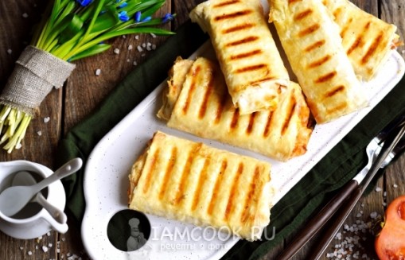

Хот-дог в лаваше на гриле

Ингредиенты:
- Сосиски тонкие – 7 шт.
- Лаваш – 200 г (1 упаковка)
- Помидор – 1 шт.
- Морковь по-корейски – 150 г
- Майонез – 5 ст.л.
- Кетчуп – 5 ст.л.
- Горчица – 2 ч.л.
- Сливочное масло – 10 г
- Соль, перец – по вкусу
Пошаговый рецепт
- Поджарить сосиски до появления румяной корочки.
- Разрежьте лаваш на прямоугольные куски одинакового размера, с одной стороны лавашей — полоску из майонеза (1 ст.л.).
- На майонез положите жаренную сосиску, покройте её кетчупом и горчицей.
- Тонкие пластинки помидора положите на сосиски.
- Уложить сверху морковь по-корейски.
- Начинку посолите и поперчите, заверните боковые стороны, сверните в рулеты как можно плотнее. Можно жарить.